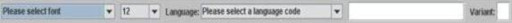
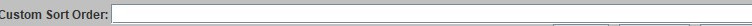

Getting started with WOLF
Before entering words into your dictionary, there is only one required step. You will need to add at least one language (or as many as you plan to incorporate into the dictionary). To add a language, click on the globe icon . This icon appears on the left of the application frame. Once clicked a dialog will appear that includes drop-down menus and a text field as shown below.

The first two drop-downs on the left are for selecting a font and size to be used for a language that you will add. The next one is for selecting the standard three character ISO language code that corresponds to the language. Since there are approximately seven thousand living languages, the language code drop-down is quite long. However, you can type the ISO code (if you know it), and the drop down will jump to that section. You can also use the scrollbar to view the one you want and click on it to select. When you click on a language code, the text field will fill in with a default name for the language.
You can change the default language name as you wish. This is especially useful if you are using MAC based .keylayout files. In this case, make sure the name matches the name (without the extension) of the .keylayout file dropped into the Acorns/keylayougFiles folder (you will need to create this folder if it does not already exist). WOLF will then automatically change the keyboard layout to accommodate text input fields using this language. It will also automatically embed these keylayouts into Web and mobile-based dictionaries as well. Key layout files are widely available, but you can create them using the ACORNS ELK software. APPLE has utilities to create these files as well.
The variant field to the right is optional. It is useful if you have multiple writing systems (fonts) for your language. The variant code must be no more than two characters in length.
After the dialog information is correct, click the add button and you will see the language added to the list in the middle of the panel. You can repeat this procedure to add as many languages as you wish. If you make a mistake, just click on the erroneous information in the list and then alter the information displayed. To record the changes, click modify. Tou can also click on the remove button to delete a language. Be careful when removing; if the language contains words, you will lose them, and if the dictionary data was not saved, you will not be able to get the lost words back.
To exit the language dialog, click confirm for WOLF to record all your changes. If you click, cancel or the close frame X at the top, the dictionary will revert back to the state it was in before you ran the language dialog.
Language Dependent Sorting

Some languages require sorting orders that are different from the Unicode character values of their language font. This is accomplished by using the dialog at the bottom of the language entry dialog (shown above). Simply type in the desired sorting order for your language. Don't forget to save your changes.
Optional Steps
There are four buttons below the globe icon at the left of the application frame. These are to respectively enter information regarding copyrights, contributing authors,configuring output formats, and manage ontology data.| Copyright | Clicking this icon causes a text area dialog to appear. Simply type the copyright notice and then click confirm. | |
| Author | The author icon enables you to enter contacts for authors that contribute information to the dictionary. Each time you finish entering information about a new author, click add. This will cause the author to display among a list of those already entered. Clicking on one of these authors will cause their contact information to display in the text fields. You can then modify the information and click modify or you can click the remove button to delete an author. Clicking confirm will cause WOLF to incorporate your changes into the dictionary. | |
| Templates |  |
Users can customize how dictionaries print RTF and PDF formatted documents by creating user-defined templates. Please refer to Template Definitions for more details. |
| Ontology | WOLF uses the standard ontological terms defined in the GOLD ontology. This list was created through the E-meld project. If you are happy with this list, you need not use this dialog. However, by clicking on this dialog, you can customize the ontology for your needs. For example, you can enter abbreviations for ontological terms, should those provided be too wordy. |
Keyboard Mappings
WOLF supports keyboard mappings that use .keylayout files, popular on MAC systems. The ELK ([E]xtended [L]inguistic [F]ramework) project, which is also housed on this site, can be used to create these files. Since these files are used on Mac systems, you can avoid the creation step by finding a prebuilt keylayout file appropriate for your language, on the Web. WOLF uses these files to be able to embed keyboard mappings into Web and Mobile dictionaries that it creates. That way, users don't have to worry about activating special keyboards on their local systems.
To activate this feature, simply drop your keylayout files into the Documents/acornsFiles/keyLayoutFiles folder (or Documents/Acorns/keyLayoutFiles folder on newer installations). On applications obtained from the Apple Store, because of strict file access restrictions, Wolf uses the Downloads folder instead of Documents.